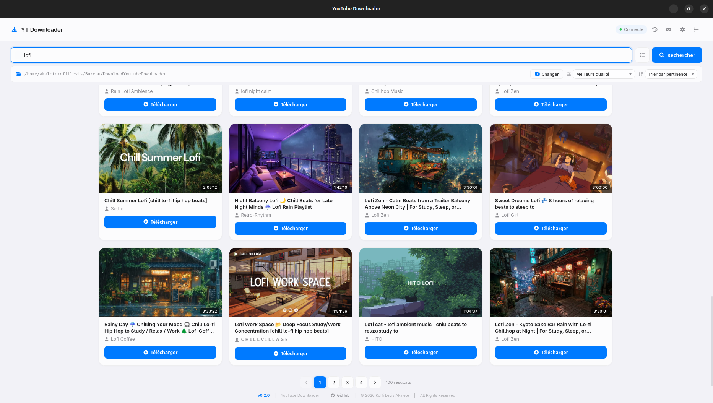
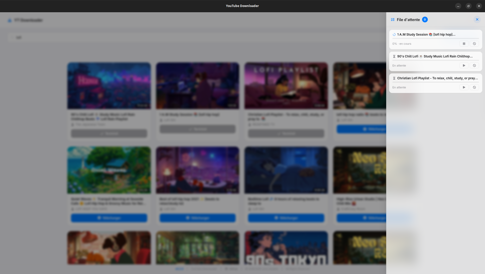

Fonctionnalités
Tout ce dont vous avez besoin, et rien de plus.
Recherche intégrée
Cherchez directement dans l'application sans ouvrir votre navigateur. Jusqu'à 100 résultats par recherche.
- 100 résultats par recherche
- Vidéos, playlists, chaînes
- Aperçu avec miniatures


File d'attente intelligente
Gérez plusieurs téléchargements en même temps avec barre de progression temps réel.
- 1 à 5 simultanés
- Pause, reprise, annulation
- Progression en pourcentage
Choix de qualité
Vous choisissez la qualité avant de télécharger. De la meilleure qualité à l'audio pur.
- 1080p Full HD
- 720p / 480p / 360p
- Audio MP3 haute qualité


Thème clair & sombre
Design glassmorphism premium avec deux thèmes. Switch instantané depuis le menu.
- Glassmorphism premium
- Switch instantané
- Préférence sauvegardée
Bilingue FR/EN
Interface disponible en français et en anglais. Changement en un clic depuis le menu.
- Traduction complète
- Sauvegarde automatique


Dossier personnalisé
Choisissez où sauvegarder vos téléchargements avec le sélecteur de dossier natif.